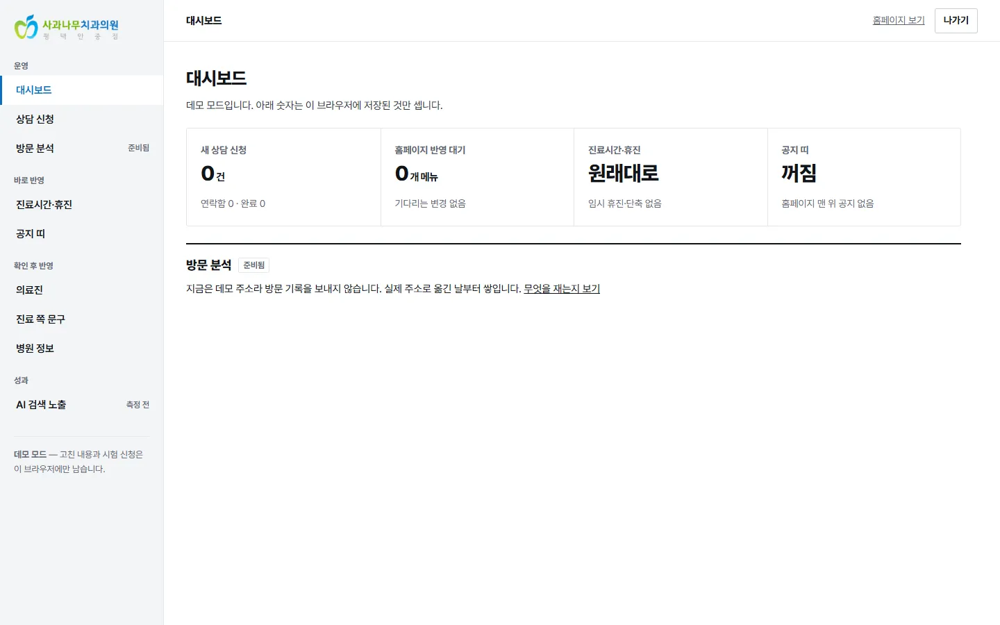

새 홈페이지 PC·휴대폰 화면
안중사과나무치과 리뉴얼 데모를 PC(가로 1440)와 휴대폰(가로 390) 크기로 찍은 실제 화면입니다. 그림을 누르지 않아도 되도록 틀 안에서 내려 볼 수 있게 두었습니다.
2026년 11월 27일 데모 화면 · 쪽 54개 중 네 쪽과 관리자
첫 화면
들어오자마자 병원 이름과 의료진, 전화·카카오톡 단추가 보입니다. 휴대폰은 아래 막대에서 바로 전화합니다.

홈 전체
틀 안을 내려 보세요. PC는 절반 크기로 찍었습니다(실제 높이 7,350px, 휴대폰 9,995px).


관리자
진료시간·휴진과 공지 띠는 병원에서 고치면 바로 홈페이지에 반영되고, 의료진·진료 쪽 문구·병원 정보는 확인을 거쳐 반영됩니다. 아래는 데모 모드 첫 화면이라 숫자가


새 홈페이지에 담은 것
- 쪽 54개진료 22쪽, 질문 답 18쪽, 병원 소개·둘러보기·장비·위생관리, 진료시간·오시는 길, 상담 신청, 비급여 진료비
- 문답 67개화면 글자와 검색·AI용 구조화 데이터
(FAQPage)가 한 글자도 다르지 않게 - 의료진 4명약력 원문과 전문의 표시, 쪽마다 같은 사진·이름
- 비급여 진료비 28행 · 제증명 10행그림으로만 있던 공지를 글자 표로
- 진료 설명 그림환자 사진·전후 사진 대신 선으로 그린 그림, 새로 그린 그림 안 글자는 휴대폰에서도 12px 이상
- 휴대폰 아래 막대전화 · 카카오톡 · 상담 신청 · 오시는 길
운영 전에 할 일
- 병원 확인 질문 40개담당 원장, 교정 진료 요일, 상담실·수술실 수, 상담 신청 보관 기간 등
- 사진원장님 진료 장면, 심미보철 완성품, 지금 모습의 층별 사진
- 주소 연결과 검색 허용운영 주소로 옮기면서 검색·AI 로봇 허용, 사이트맵 제출
- 상담 신청 받을 곳받는 담당자·알림 방법·보관 기간과 동의 문구를 정한 뒤 접수 시작